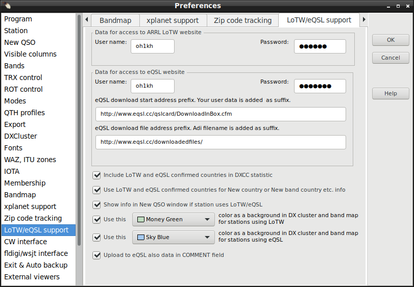
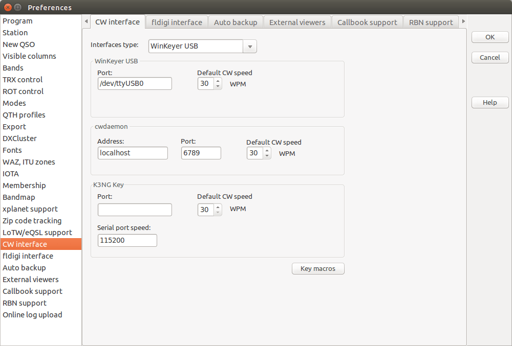
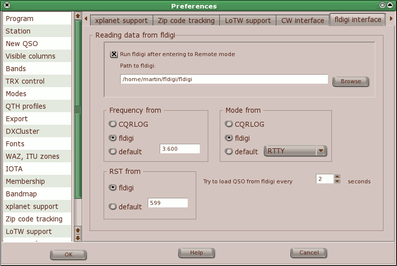
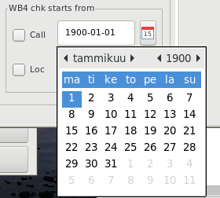
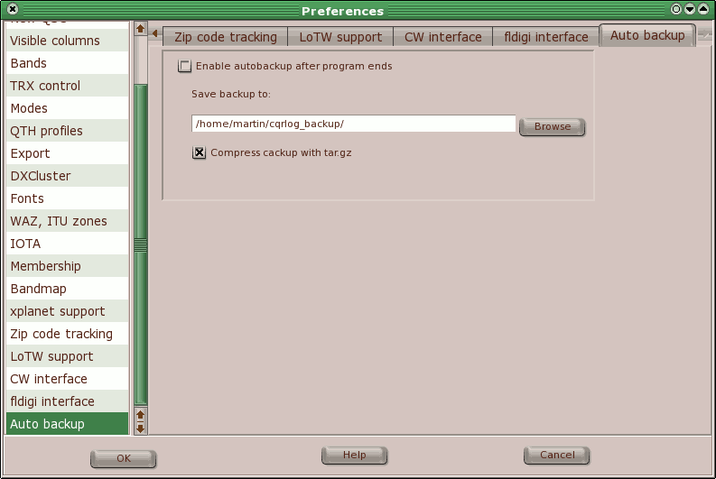
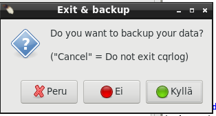
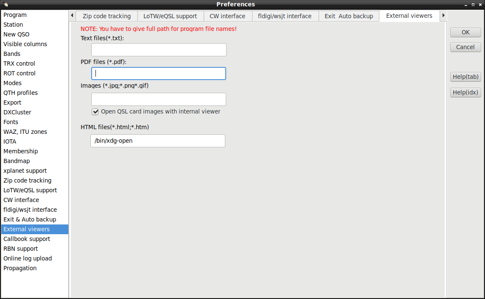
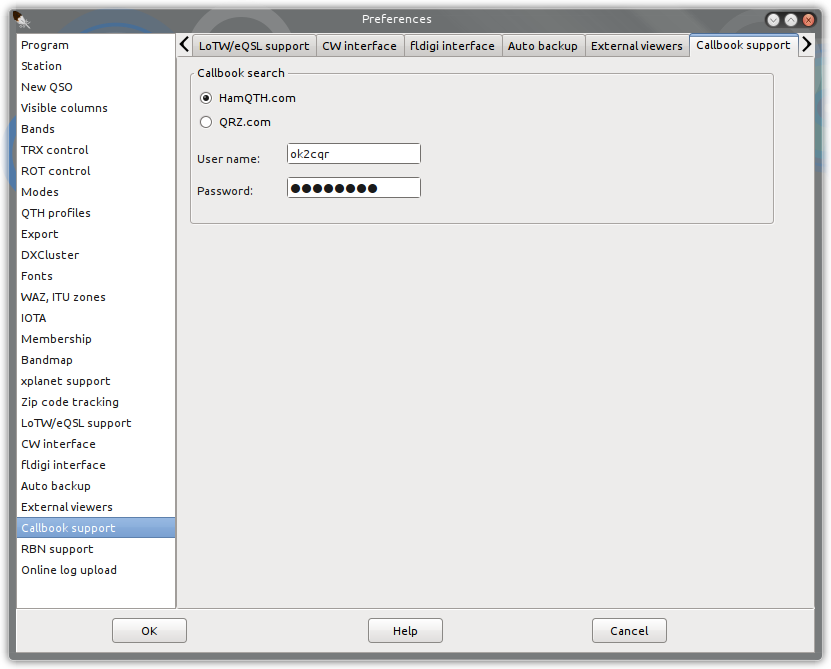
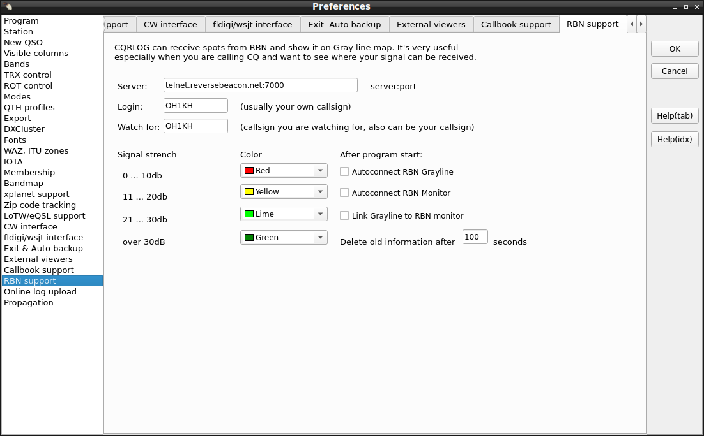
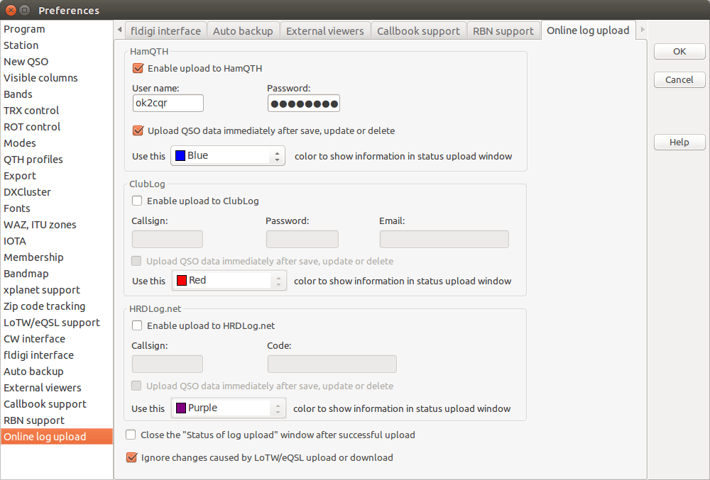

Enter your call, name, QTH and QRA Locator here. Remember, that the entered call is also used
as the login for the DX Cluster and is displayed on all stats exported to html. The QRA locator
is of high importance because it determines your accurate position (ie. you don't need to enter
your exact coordinates). The QRA Locator is used in beam heading and distance computation as
well as the start point of the simplified path to the other station which appears on the
grayline map.
Locator writing format is forced to "AB12cd" that follows definition https://en.wikipedia.org/wiki/Maidenhead_Locator_System#Description_of_the_system
If you want to use the export function to export contest logs as .edi file you can fill in your
personal data into the filelds in the General section. Those are then also
exported to your contest logs.
Here are the default values for a new QSO. Remember, that if the radio interface control is
active, the default frequency does not appear on the logging screen. The preset RST values
will apppear in their corresponding boxes.
The
Change default values button allows you to change the frequencies available in
the drop down menu in the NewQSO window. Very useful if you have favourite frequencies
and don't have the radio connected to the computer.
The
'Use spacebar to move between fields' is very interesting and probably the
most natural way but it works only if you are moving forwards. To move between fields,
there are two other generic possibilities (TAB key and up/down arrow keys) which
remain unaffected even if you check the spacebar option.
The
'Refresh data after save QSO' affects the data displayed in the QSO List (Ctrl-O). If checked, each
QSO appears in this list immediately after logging, however the refresh procedure is
quite slow. To save time, keep this box unchecked.
The
'Skip over mode and frequency when radio is connected' is very important if the radio control is active.
The
'Enable auto search on HamQTH.com/QRZ.COM/QRZCQ.com' switches on the automated search
for HamQTH/QRZ callbook data for any worked station. This option does the same as F6 on the
logging screen, however it can be rather slow depending on the HamQTH.com/QRZ.COM server
availability.
The
'Show recent QSO records for last ** days' limits the QSO records
listed in the logging screen. Do not set the number of days too high, a high number can
cause program speed issues! The default value of 5 days is appropriate for most cases.
The
instead show QSOs B4 with logged call changes recent QSO records to list of worked before list with just logged callsign.
I.E. Same list you can see while you have edited a new call, but not yet saved as logged qso. This works only, as option, if
'Show recent QSO records for last ** days' is first checked.
The
In previous QSO list show also QSO with call/p etc. means you can see
previous QSO with a station even if he was active from another country with his
call/prefix. E.g. if you enter OK2CQR, you'll also see previous QSOs with him when he
was OM/OK2CQR, SP/OK2CQR etc.
The
Enable satellite mode Opens second tab 'Satellte' to NewQSO/DXCC statistic view. There you can select used satellite name,
RX frequency and also propagation mode for logged qso.
If you enable the
Upload SAT info to AMSAT status page cqrlog will upload a status info to the AMSAT satellite status page. This only happens for satellite QSOs (i.e. propagation mode is "SAT"). The status page can be found under:
https://www.amsat.org/status/.
User defined web button defaults to www.qrzcq.com requesting info for currently existing call in NewQSO, but you can define URL address you want and use listed macros if needed.
Keys and Shortcuts for NewQSO Window you will find
here.
Checked columns are visible in the previous QSO list appearing at the top of the
logging screen. Except "Distance" that makes calculated distances visible at QSO list panel area.
Display of distances requires that preferences/station/locator is set and applied (automatic) to every qso and that at least 4 digit locator (when "ll" is added as 5 and 6th char) of destination station is logged.
Sometimes importing logs from other logging program may leave my locator unset. In this case QSO list/File/Group edit must be used for updating my locator field.
Checked bands are visible in both statistics appearing at the bottom of logging screen
(bands/modes of the actual logged station) and main DXCC, WAZ and ITU zones statistics.
It also affects the Challenge points at the bottom of the DXCC statistics.
Pressing button frequencies band, and mode limits within bands, can be set.
Some rotators have turn from -180deg-0deg-180deg (south stop), like Hamlib Dummy test rotator.
Most of rotators have turn 0deg - 360deg.
Some may turn 0deg - >360 deg. With them cqrlog never drives values over 360, but reads position right if rotor sends over 360 deg value (sent_value-360 = cqrlog display).
Here you can set up the default bandwidth for any of the supported modes (CW - SSB - DATA - AM - FM) for rig selectd from Radio
selector list box.
If your rig is tuned to the corresponding band segment or if you switch the mode from TRXControl buttons CQRLOG will change the bandwidth
to the defined value.
Setting 0 (zero) to values means that rig should use default bandwidth. This is good selection also when rig can not support bandwidth
settings (like some ICOM rigs).
Setting -1 here means that bandwidth setting must be kept as it was. This also needs that rigctld supports negative value (version >= 4).
Log mode This is the data mode you most often use. Defaulting to RTTY. From mode selector you can select another mode.
If mode does not exist you have to define it in User defined digital modes and then come back to mode selector.
This mode efftects to DXCluster window's spot line coloring (See DX Cluster ) and also sets defined mode if DX spot line
is double clicked.
CAT cmd This is the rigctld mode command that needs to be sent to rig to get rig to proper mode for Log mode.
Use also reverse (cat -> rig) This defines if Cqrlog should show Log mode when rig is set to CAT cmd
mode. This may have a pitfall. If your settings are for example SSTV and USB then Cqrlog will select mode as SSTV also when you are working USB fone qsos.
Usually this needs not to be set if DATA qsos are worked with external program using Cqrlog remote modes.
User defined digital modes can be set up in a separate box. Use comma as a separator, ie. MYMODE1,MYMODE2 etc.
User should add digital modes (submode names) exactly as written in this table ADIF.org: Mode_Enumeration
If mode is missing from NewQSO/mode selection list and not added to User defined digital modes it may prevent ADIF import causing "wrong mode" error.
The first thing to be set up is the path to the xplanet binary. The default
/usr/local/bin/xplanet
is OK in most cases for installation from sources,
the usual path for installation from precompiled packages is
/usr/bin/xplanet
Adjust the
window size (remember to set up a square, ie. 400x400,
300x300 etc. to avoid strange effects). Also, the
window position
must be set up to create a nice looking screen. Use the
Test it!
button to see how your settings affect the resulting screen.
Xplanet can refresh its display at a preset interval. This is very useful because it
can read the spot (entry) list and update the displayed data. To avoid a 'flooded',
unreadable window, the number of displayed spots/entries must be limited. It seems
that 20 is the maximum to keep the display garbage away. Actually, the number of
spots (entries) is not limited by the program but by the readability. If you change
the number of spots to be displayed or if the spots should (should not) be sent to
xplanet, restart the program. Remember that a program restart will be needed to
make the changes take effect!
Set up the source (DX Cluster, Band map) by checking the appropriate radio button
in the '
Show stations from' section. The '
Projection'
has 3 options:
- 3D - shows the globe as viewed from space. This rendering
type without any projection is very nice, however the very distant points will not be
visible, also spots or band map entries of distant DX locations will disappear.
Angles should be true because the globe is 'centered' on your location. Distances
are not true because of the lack of projection. This eye candy is
therefore good for those who do not work DX stations.
- Azimuthal - is the usual directional map which you will find
useful for any rotator indication. Both angles and distances are true, however the
continent patterns may look a bit strange to those who are not very accustomed
to this projection. The azimuthal projection is the best for a DXer.
- Azimuthal without background - is the same as above but the
background which contains the angle (polar) scale is not rendered. It is an
'emergency' solution which is useful if you have not enough space to set up
the main xplanet window as a square.
The center locator for the xplanet window can be customized by configuring in on
this page. In case the field is empty the default locator of the station is used.
If you want to have your own position displayed within xplanet check the
Show own
position within xplanet checkbox.
this page. In case the field is empty the default locator of the station is used.
The xplanet window currently has no other function than to display spots or band
map entries in the azimuthal projection or 3D-like picture.
Zip code tracking

Zip code tracking allows you to determine states, counties, provinces and other
geographical details if the postal zip code structure allows such operations. The zip
code itself is retrieved from the callbook address. The database is located in
the /zipcodes folder. If set up properly, the F6 key is used to determine US state,
US county and Italian province.
Setup: The database must be loaded before use and the target (field)
must be specified. Also, the position of the zip code (line begin or end) must be set
up.
LoTW/eQSL support

Provide your user name for eQSL/LoTW and the password (this is
not
the password sent to US amateurs via postcard!). Choose if you want to include LoTW
confirmation in the statistics and
New country and
New band country
info messages.
Normally you do not need to touch eQSL addresses. But in case something changes at eQSL web pages it might be possible to fix it here without rebuilding cqrlog program.
CW interface

Choose your preferred CW interface for radio you have selected from
Radio selector list.
There are 5 options: None, WinKeyer ,cwdaemon, K3NG keyer and HamLib in
CW interface type selector list.
We strongly recommend
Winkeyer by Steve Elliot, K1EL, which provides 'all in one' keying, including one of most
advanced paddle keyers available.
When checking
Use potentiometer's CW speed Cqrlog does not send
Default CW speed command to keyer
when it is initialized.
cwdaemon should be seen as a backup option with many limitations, which may need a custom linux kernel to avoid
sloppy CW at speeds above 25 WPM. If cwdaemon is used, only keyboard keying is possible.
If you use
Do not reset when switching radios it prevents keyer reset (that sets CW speed to default).
This option does not apply with Hamlib keyer in use.
Detailed setup of the CW devices are here:
For further steps (CW messages edit, keyboard keyer operation) - click
here.
fldigi interface
First,
fldigi must be installed and functional.
Preferences must be set up to operate with fldigi. Set up the path to fldigi, and if you wish
to start it when CQRLOG switches to remote mode. Other parameters including the way that
the CQRLOG - fldigi combo should handle the frequency, mode and RST. CQRLOG also loads
the fldigi contents to keep the data, so the 'polling' period should be set up.
The 2 seconds interval is a very acceptable default.
The way the CQRLOG - fldigi combo handles the frequency, mode and RST is rather important.
Keep in mind that CQRLOG operates in remote mode which means that the logger is offline
and therefore does not display the actual frequency and mode on the logging screen. If
you properly set up the
fldigi mode and frequency control, both are correctly
displayed in the
fldigi window.
Choose the fldigi option in
Frequency from,
Mode from and
RST from boxes and you don't
need to watch the logger, except the QSO list in the upper portion of the logging screen.
When logging/saving a contact, frequency, mode and RST should appear correctly in this QSO list.
If you choose the CQRLOG option, you must set the mode in CQRLOG which seems less sensible.
See also:
Using fldigi withXmlRpc remote mode

wsjt-x interface
Setting wsjt-x interface is mainly same as setting fldigi. How ever communication is done via UDP frames and so the IP address and Port must be specified.
Default values are
127.0.0.1 or
localhost for address and
2237 for port. These are set in wsjt-x settings/reporting and if changed there, must also to be changed here.
Address can also be other PC's IP address if wsjt-x is running in different networked PC than cqrlog, or even
0.0.0.0 when cqrlog listens all transmits from every wsjt-x in network.
You can also use a multicast address for both
wsjt-x/settings/Reporting/UDP Server and
cqrlog/preferences/fldigi/wsjt interface/wsjt addr. Cqrlog will handle ip addresses starting with "239." as multicast addresses.
With multicast you are able to run several programs listening to wsjt-x udp broadcasts at same time. To start with multicast try multicast group address "239.255.0.0" for both cqrlog and wsjt-x (and also other programs needed to listen wsjt-x)
Using
WB4 chk starts from it is possible to limit log search starting from given date for callsign and/or locator.
Setting checkbox will apply given date as start date. Otherwise, when unchecked, whole log is searched through.
These limits will affect to callsign and/or locator coloring in wsjt-x monitor and worked grids map summary counts and grid painting.
WB4 can be handy when working
ARRL International Grid Chase or
ARRL RTTY-FT8 like contests if one does not like to create separate log for that purpose.

Pressing calendar icon is easy way to set date. Double click on selected date closes calendar and sets the date. Pressing ESC closes calendar, but does not set date. Date can also be typed in manually.
ADIF interface
Setting of ADIF interface is similar as wsjt-x interface. Only IP address and PORT have to be set if they are not defaults.
Default values are
127.0.0.1 or
localhost for address and
2333 for port. These are set in wsjt-x, or js8call, settings/reporting and if changed there, must also to be changed here.
Address can also be other PC's IP address if wsjt-x is running in different networked PC than cqrlog, or even 0.0.0.0 when cqrlog listens all transmits from every wsjt-x in network.
That is an easy choice because it works in all cases, even when running applications in different virtual machine of same PC. Just remember to open firewall for UPD port that is used.
At WSJT-X 2.1.0 settings ADIF remote is renamed to "Secondary UDP server (deprecated)" and it is reported to be removed completely in future. Because of that it is now possible to set cqrlog's ADIF port to wsjt-x UDP server port number. WSJT-X 2.1.x UDP frames contain message #12 that
includes log information in ADIF format and ADIF remote can now parse that from binary data if you do not like to have monitoring properties (using wsjt remote) but want just qso logging (using ADIF remote).
ADIF remote has now better support for QRZ/HamQTH info fetch. If this is not allowed in preferences, or if there is no reponse from Web max waiting time (timeout) is 5 seconds (You can not remove this property, so be patient. You can not have new qso for logging during 5 seconds!).
While having qso you can write some notes like Name, QTH, Comment to QSO, etc. to NewQSO and it will saved with qso data during next wsjt-x "log qso/OK" event. They will not be overwritten by possible Qrz/HamQth info.
NOTE !! Wstx- does not send contest -name, -number and -string in ADIF logging datagram. Contest exchanges are placed to regular rst_s and rst_r strings. So cqrlog can not fill proper contest columns when logging is done with ADIF datagram using ADIF remote.
Exit & Auto backup
To increase the safety of your log data, CQRLOG is equipped with an
Auto backup
option which allows you to export (ADIF) and store the log data in a safe location.
The ADIF format was choosen because of its text format. The output file can be compressed
in tar.gz format.

Of course, the export and compression takes some time, depending on the log size (QSO count).
If you are not in a hurry, allow the program 2-3 minutes to perform this safety measure.
We reccomend you backup your log to your hard drive from there it should be copied to
other media (your server, USB flash, a memory card etc.).
Distances are not exported in backup phase. So do not expect to find them from backup file.

Check both "Enable autobackup after program ends" and "Ask before creating a backup" to prevent closing cqrlog accidently. Answering
"Cancel" to question returns to NewQso without backup.
External viewers

Set up the viewers used for browsing the notes related to a particular callsign.
The notes in the call_data subfolder can contain text, html, pdf and image files.
To enable reading of all file types, corresponding viewers must be set up properly,
ie. must be in the system path.
Note: Setting html browser here affects only to call attachments and it can be different than system default, or different than selected at preferences/program tab.
Hint: If you click Web browser name edit box a file open dialog opens and you can navigate to your browser. If you place cursor on Web browser name edit box, press left button and keep it down, you can paint exisiting text and use delete button to clear it and type new text.
Callbook support
CQRLOG supports
HamQTH,
QRZ.com and
QRZCQ.com
callbooks but only access through the XML interface is supported. HamQTH has a free interface,
for QRZ.com and QRZCQ.com you have to pay an annual fee.

RBN support
CQRLOG can receive spots from RBN and show them on the Gray line map or RBN monitor (text list). It's very nice to
see where your signal has been decoded especially when you are calling CQ on an empty band.
RBN support settings for Grayline map is done at Preferences.
Setup for RBN monitor (text display) is done at RBN montor (NewQSO/WINDOW/RBN monitor) with toolbuttons.
See:
Operation/RBN monitor

- Login: - your user name to log in to RBN. It's usually your own callsign.
- Watch for: the callsign you are watching for, usually your own callsign but can be any. You can also type in prefix followed by asterisk I.E. OK* etc.
If you leave this field empty, every spot will be shown on the grayline map.
- Signal strength How strong you are will be clear very quickly when you look
at the map with the dots in different colours. Which colour will be used can be set here.
- After window opens - check these options if you want to autoconnect
to RBN when the Grayline and/or RBN Monitor window opens. If you have closed cqrlog with window(s) open they will open at next program start
and so also connection is made.
- Autoconnect RBN Grayline connects Grayline map to RBN.
Connection to RBN must be done either here with Autoconnect RBN Monitor or manually at Grayline window side.
- Autoconnect RBN Monitor connects RBN Monitor to RBN site. See: Operation/RBN monitor
- Link Grayline to RBN Monitor links Grayline to same connection as RBN Monitor uses. It saves one connection as the same RBN connection can be used for both Grayline dotting and RBN Monitor listing.
Note: Linking alone does not start Grayline dotting.When linked, Grayline dotting and RBN Monitor listing both uses their own filter settings what call(s) to follow.
Note: "Connect RBN Grayline" and "Link Grayline to RBN Monitor" are alternatives. You can not select both of them at same time.
- Delete old information after XX seconds The dots won't stay on the map forever.
180 seconds (3 minutes) is a good default value.
Note: Dots also depend on the band, if you change band, dots will always be deleted. All data is band related.
Online log upload support
CQRLOG supports online log upload to
HamQTH,
ClubLog.org,
HRDLOG.net and
N1MM+ UDP contact messages

Both ClubLog and HamQTH need a username and password, Clublog also needs the email address
used when you registered. HRDLog.net needs only user name and the code you got by e-mail.
N1MM+ format UDP messages require a hostname/IP and port number in format
hostname:port (e.g. 127.0.0.1:5444).
You can set different color for each service. This color will be used for status messages
which will inform you about upload progress.
Upload QSO data immediately after save, update or delete means that every
insert/update or delete will be uploaded automatically. But if you change something in
QSO list window with hot keys e.g. Ctrl-S, Ctrl-W etc. and/or download data
from eQSL/LoTW, changes won't be uploaded. All will be uploaded after you save/delete QSO
or if you choose Online log and Upload to all online logs menu.
How to get it to work?
- check if you have set correct username, password (email, Code)
- in case Url address of online log API has changed you are able to change it here
- export all data from the log to ADIF file
- import this adif file to the website of online log you are going to use
(if you are using HamQTH, please wait untill the email about a successful import arrives)
- open QSO list window, click to Online log menu and choose
Mark QSO as uploaded to all logs, CQRLOG marks all QSO as uploaded
That's all, Now if you insert/edit or delete a QSO, it will also be uploaded to the online log.
Close the "Status of log upload" window after successful upload
if you don't want to have Log upload status window visible, check this option and
windows will be closed after upload to online log is finished.
Ignore changes caused by LoTW/eQSL upload or download - every change of
a qso will cause a new upload to the online log database. Sometimes it can be useful to
have the opportunity to disable it when upload/download data to LoTW/eQSL. These changes
won't be logged and QSO won't be uploaded to any online log.